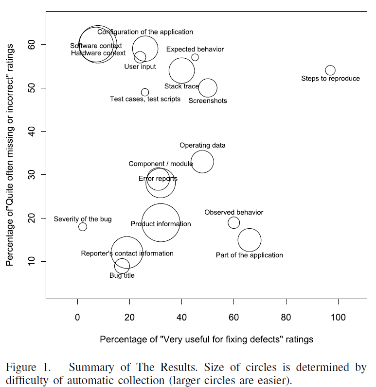

What's in this paper?
- Correctness, and usefulness of software defect (bug) information is studied.
- Questionnaire completed by 74 professional software developers in six organizational units.
- Figure: Items on the right are considered more useful, items on the top are more often missing or incorrect, items with larger circles are more feasible for automatic collection.
- The most important defect information items are: “steps to reproduce”, “observed behaviour”, “part of the application”, "screenshots", “configuration of the application”, and “operating data”
Abstract
Defect reporting is an important part of software development in-vivo, but previous work from open source context suggests that defect reports often have insufficient information for defect fixing. Objective: Our goal was to reproduce and partially replicate one of those open source studies in industrial context to see how well the results could be generalized. Method:We surveyed developers from six industrial software development organizations about the defect report information, from three viewpoints: concerning quality, usefulness and automation possibilities of the information.Seventy-four developers out of 142 completed our survey. Results: Our reproduction confirms the results of the prior study in that “steps to reproduce” and “observed behaviour” are highly important defect information. Our results also extend the results of the prior study as we found that “part of the application”, “configuration of the application”, and “operating data” are also highly important, but they were not surveyed in the prior study. Finally, we classified defect information as “critical problems”, “solutions”, “boosters”, and “essentials” based on the survey answers. Conclusion: The quality of defect reports is a problem in the software industry as well as in the open source community. Thus, we suggest that a part of the defect reporting should be automated since many of the defect reporters lack technical knowledge or interest to produce high-quality defect reports.
Ref
Laukkanen E. I. and Mäntylä M. V., "Survey Reproduction of Defect Reporting in Industrial Software Development" in Proceedings of the 5th International Symposium on Empirical Software Engineering and Measurement (ESEM), pp. 197-206, 2011, Banff, Canada
Attachments:
{kind=link}
Comments:
|
I like to thank you for that efforts you might have produced in writing this article. I am hoping the exact same very best operate from you within the future as well. Actually your inventive writing abilities has inspired me to start my personal Blog now. |